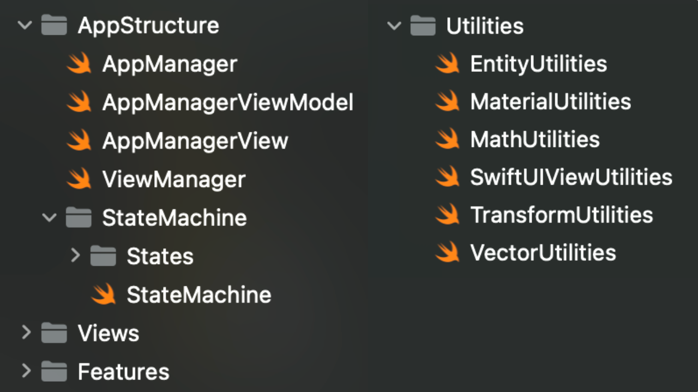

Meet the one and only Kung Fu Panda in a unique Mixed Reality encounter where the Dragon
Warrior himself, takes time out of his Kung Fu training to teach you some meditative moves.
Follow Po's lead using your whole body to copy his moves. Learn all the meditative patterns,
with some helpful coaxing by Po and achieve a moment of tranquility atop the misty mountains
in the Valley of Peace.
As lead developer, I was in charge of designing and implementing the architecture, app
features and wiring up studio assets while collaborating closely with creative, development
and studio teams to
ensure a seamless and engaging interactive experience.
Lead Developer, Interactive Artist
Swift, RealityKit, ARKit, Xcode, visionOS
Apple Vision Pro
For the Tai-Chi sequences, I utilized Apple's ARKit framework to capture user hand data and compared the player's hand movements against those of Po.
I designed a comprehensive character animation feature to manage and blend over 40 unique animations for Po. Animations were then triggered via the current states and sometimes responding to player data.
I developed a stateful AppStructure utilizing Apple's GameKit framework along with independent, modular features. I also developed a suite of utility classes of common tasks and mathematical operations.
